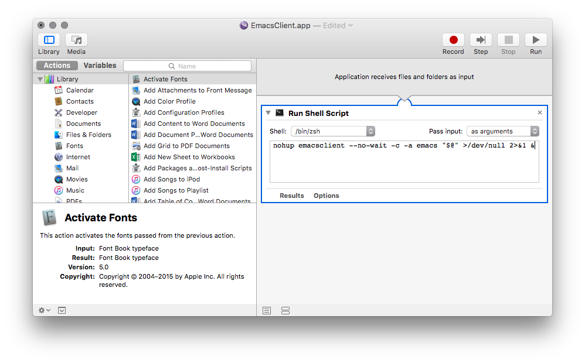

I know I promised this article a loooong time ago (June 2014, when I first got a Mac, to judge by the previous timestamp in the header of this file), but since the historically attested readership of this blog is 2 + a bunch of my facebook friends who I nagged to read my attempt at explaining character encodings to non-technical people, I don't suppose it's as if a legion of fans have been restlessly looking forward to this one ;) Nevertheless, the distinct advantage is that my OS X Emacs setup has had the opportunity to grow more mature and also much simpler in the meantime, which means that if a third reader accidentally stumbles over this note (exploding my ratings...), they might actually find something genuinely useful here.
tl;dr
This article presents a way to start Emacs Daemon (a persistent Emacs session) from the GUI and subsequently connect to it (creating frames on demand) using an Automator script. The benefit is that you incur startup time lag only once (when you start the daemon) while still being able to close all frames when you're not using Emacs, keeping a clean workspace. This is especially useful if your Emacs is heavily customized and loading it takes a while. Another benefit is that whenever you open a frame connected to an Emacs daemon, all your previously open buffers are still there as you left them (as opposed to opening a fresh instance of Emacs).
Skim over the code blocks to get the important gist without the verbose sauce. Tested on OS X 10.11 El Capitan, with Homebrew Emacs and Spacemacs config.
Why Emacs Daemon, why this post
Installing Emacs on a Mac in and of itself is not that much of a problem -- there are several options, ranging from Homebrew and Macports to Emacs for Mac OS X, Emacs Mac Port and Aquamacs. The last two in this list have some OS X specific tweaks (smooth scrolling, tabs, adapted keyboard shortcuts), which makes them perhaps more appealing out of the box but also less extensible, as some of the information out there about generic Emacs might not apply to them as straightforwardly or indeed at all.
With that in mind, if you want to tinker with your Emacs config, it's a good idea to stick with Homebrew's fairly conservative version of Emacs:
$ brew update
$ brew install emacs --with-cocoa
# this step gets you a standard OS X launcher icon
$ brew linkapps emacs
But now that you've got Emacs, and especially if you're transferring some heavy
customization over from say Linux, you might be unhappy that each time you start
it from cold, it takes a while, typically a few seconds. That's what emacs
--daemon and emacsclient are for: Emacs is run as a daemon in the
backround and you connect to it with client frames that spawn almost
instantly. This also means that you can close all existing frames to keep your
workspace clean if you won't be using Emacs for a while (hard to imagine, right,
since you can even
read xkcd from inside Emacs) and then
whip up a frame at the speed of a thought when need arises.
Now this is all easy to achieve when using the terminal, but since you probably bought that Mac in great part for its shiny pretty elegant ergonomic GUI, you might want Emacs to use GUI frames instead of terminal ones and connect to the Emacs daemon (or start it if it's not running) by just clicking on an app icon in the launcher or finding it from Spotlight. That's where Automator comes in.
An Automator script
Automator is a built-in OS X app for creating custom automated user workflows for just about any installed app you might have or even OS functionality. Among other things, this means that it allows you to wrap the daemon auto-start functionality available from the terminal (as described in the previous paragraph) into an app launchable from the GUI. Let's get down to business:
- Launch Automator and create a new document. Select Application as its type.
- Search the Actions palette on the left for the Run Shell Script action and add it to your Automator document.
- In the Run Shell Script building block, change the following:
- set Shell to the shell you're using and whose init files have thus the
PATHcorrectly set to theemacsandemacsclientexecutables (if you're using Homebrew, it probably told you how to properly set up yourPATHas a post-install step) - set Pass input to "as arguments" (if you then
set this Automator app as the default for opening a given type of file,
you'll be able to use
emacsclientto open files by double-clicking on them in Finder)
- set Shell to the shell you're using and whose init files have thus the
- Finally, paste in the following code snippet and save the app e.g. as
EmacsClient.app, preferably in your Applications folder so that it is easily accessible from the launcher.
emacsclient --no-wait -c -a emacs "$@" >/dev/null 2>&1 &
EDIT: An earlier version of this article had nohup prepended to the
command above; as pointed out in the comments by MaTres (thanks!), this is
unnecessary.
At the end of the day, your Automator EmacsClient.app should look something like this:

The core of the command that you might want to tweak based on your particular
Emacs setup is emacsclient --no-wait -c -a emacs; mine is optimized to work
with mostly stock Spacemacs config (see below). If it doesn't work, you might
also want to try a simple emacsclient -c -a "" and variations; a good
debugging technique is to try these out in the terminal: as soon as you get the
line working there, it'll start working in the Automator task as well.
"$@" is just the list of files (if any) passed to Emacs to open (the
aforementioned double-click in Finder use case). The rest is some black magic to
ensure that the shell which spawns the Emacs process (because this Automator app
is after all, at heart, only a shell script) totally and utterly disowns it, so
that the shell script is allowed to return and the Automator task completes as
soon as Emacs has started (or the client has spawned a new frame). Otherwise,
you'd end up with an irritating spinning cog wheel in your notification area
which would stay there until you completely quit Emacs. Which is probably not
what you want, since you're undergoing all this hassle in the first place to get
a zen, distraction-free Emacs experience.
The details of the various incantations are discussed in this Apple forum thread, but let's have a whirlwind tour for the moderately interested (my knowledge of Unix processes is far from perfect, so feel free to correct me on these points!):
>/dev/nullredirects standard output to oblivion and2>&1redirects standard error to standard output (i.e. also to oblivion), which persuades Automator that you're really not expecting to hear from the process via these standard streams ever again, so there's no point in keeping the shell script running. These can be shortened to&>/dev/null.- the final
&runs the command in the background, which ensures control of the shell is returned to the user as soon as the process is spawned; since there are no additional commands in the shell script and all remaining ties have been severed, Automator finally agrees that the task has probably done all it was expected to do and exits it.
Wrapping up
Whew! That's it. It's really not that complicated, it's just that my prose is verbose, so it makes it look like there's lots and lots to do. Trust me, there isn't. My first go at solving this usability problem -- the one I originally wanted to post way back in 2014 -- was a lengthy, godawful Applescript prone to subtle breakage. This is much better.
And the ability to just use a single GUI app for transparently launching and connecting to the Emacs daemon is pure bliss. While you're at it, for an even better Emacs experience, go fetch the excellent Spacemacs Emacs config distribution, which pulls this venerable piece of software screaming into the 21st century. The best editor is neither Vim nor Emacs, its Vim + Emacs! The addictive icing of Vim modal editing on the outside, a creamy Elisp core -- what more could you want from life? ;)
Oh and if, like me, you love Spacemacs' snappy icon with the Evil spaceship over planet Emacs -- or if, like me, you have OCD -- you'll definitely want to switch your Emacs logo to the Spacemacs one!
Comments
comments powered by Disqus